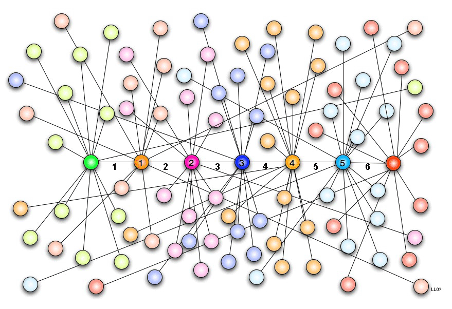

Expérience du petit monde
Le "phénomène du petit monde" est l'hypotèse que chacun puisse être rélié à n'importe quel autre individu par une courte chaîne de relations sociales. Il suggère que deux citoyens américains sont reliées par une chaîne de six relations en moyenne. On a tous déjà rencontrer quelqu'un loin de chez nous, qui partageait une relation communes à nous. Et c'est alors que l'on dit "Le monde est petit", Stanley Milgram lui a voulu le démontrer. En revanche, après des années, le statut de cette idée reste ouverte, et des études sont menées actuellement avec des modèles mathématiques.
Protocole
 Milgram a envoyé 60 lettres à des individus de la ville d'Omaha ans le Nebraska, il leur demande de faire suivre cette lettre à un agent de change, vivant à une adresse fournie dans la ville de Sharon dans le Massachusetts. Une consigne était inscrite: Si vous connaissez cette homme, enoyez-lui la lettre. Sinon, faites parvenir cette lettre a un ami suscpetible de le connaître", les participants devaient donc passer cette lettre de main à main, à leurs connaissances qu'ils jugeaint capables d'atteindre l'objectif. Au total il initia 296 chaînes et 64 atteignir l'individu ciblé, montrant qu'au final peu de lettres réussirent à rejoindre leur cible( soit 21,6% des lettres qui rejoignirent la cible). Ces études ont pu être critiquées car les individus choisis por l'expérience ne sont pas forcément compétents pour découvrir le lien entre les deux personnes servant de terminaux. Enfin ici, les expériences ont été faite sur de large population plutôt que sur des groupes restreints et habitués à collaborer tels que des acteurs, des sportifs...Résultats et Impacts :
Cette expérience montre que le nombre d'intermédiaire entre deux invidus est en realité plutôt faible: entre 5 et 6 personnes en moyenne(appelé aussi "6 degrés de séparations"). Ainsi on a pu en dégager l'idée que chaque humain sur Terre est relié par 6 liens. Milgram a également pu identifier un effet "d'entonnoir", montrant que régulièrement les chaînes transitent par un même individu, qui est lui à un réseau de relations nettement supérieur à la moyenne, et qui est ainsi juger comme personnes aptes à connaître des individus même lointain. Par exemple sur l'image ci-dessus, ont peut voir des noeuds qui sont reliés à des nombreux autres noeuds, ces noeuds sont comme des hubs, qui ont beaucoup de contacts et permettent à la chaîne d'avancer bien plus rapidement. Cette effet se retrouve par exemple sur les réseaux sociaux, (Vidéo de Mehdi Moussaïd sur le sujet) où des individus célèbres ont bien plus de connexions que des individus lambda. Car en effet ci cette expérience a semblé peu concluante en vu des problèmes qu'elle pose, elle a permis l'émergence de nombreuses recherches, améliorant le protocole et visant à montré ce phénomène plus précisement. Aujourd'hui le "phénomène du Petit Monde" se retrouve par exemple sur les réseaux sociaux, où grâce aux immenses bases de données, il est bien plus pratique de voir comment les individus sont connectés entre eux.Chercheur et lien pour en savoir plus: